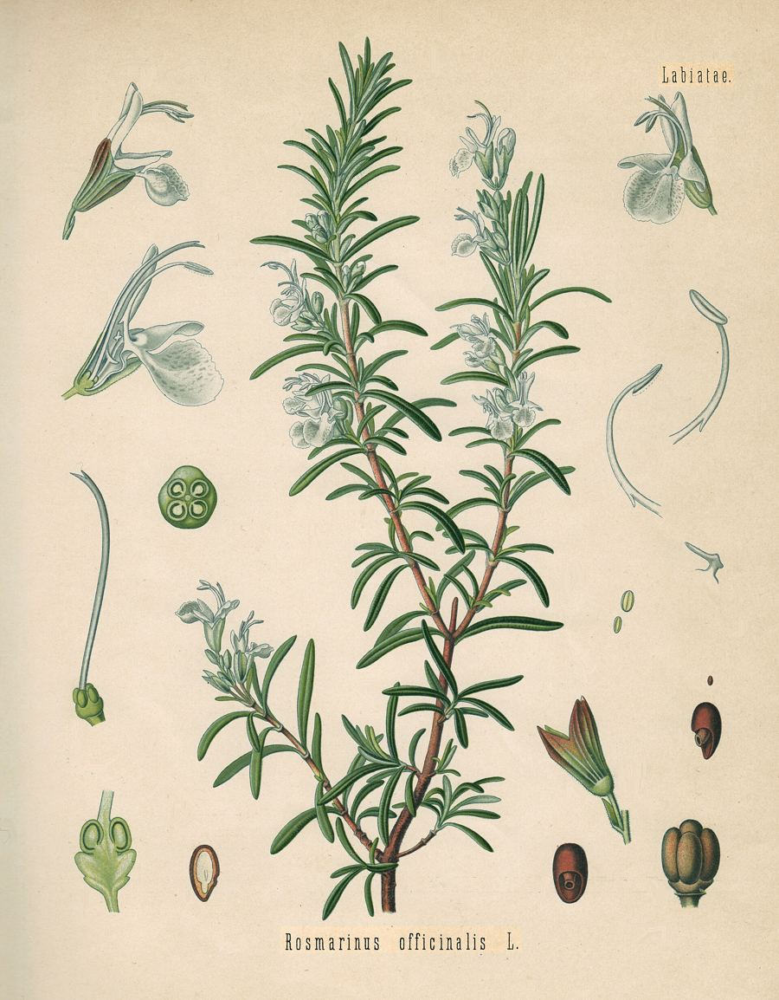
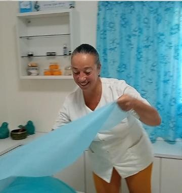
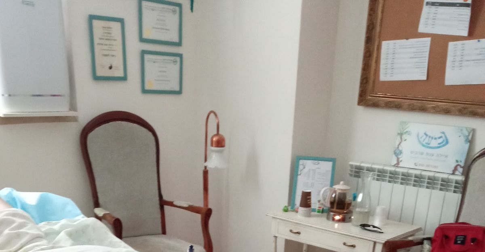

רפלקסולוגיהReflexology
עבודה על כפות הרגליים, לפי המפה שתלויה על הקיר.Work on the feet, by the chart on the clinic wall.
קונספט לדוגמה שנבנה עבור איילה ענת שרביט · זה אינו האתר הרשמי של העסקA sample concept built for Ayala Anat Sharvit · This is not the business’s official website
ידיים, צמחים ושמנים.Hands, herbs and oils.
איילה ענת שרביט – רפלקסולוגיה, טיפולי מגע ורוקחות טבעית בעבודת יד. רחוב רש״י 14, חיפה.Ayala Anat Sharvit – reflexology, touch therapy and natural cosmetics she makes by hand. 14 Rashi St, Haifa.
שישה דברים שקורים בחדר ברש״י 14.Six things that happen in the room at 14 Rashi.
עבודה על כפות הרגליים, לפי המפה שתלויה על הקיר.Work on the feet, by the chart on the clinic wall.
על מיטת הטיפולים בקליניקה.On the treatment bed at the clinic.
פילינג לכל הגוף, בקליניקה.A full-body peel, at the clinic.
שמנים וריחות מן הצמחים.Oils and scents from plants.
גם זה כתוב על השלט שבדלת.It is on the sign on her door, too.

סבונים וקרמים שאיילה מכינה בעצמה.Soaps and creams Ayala makes herself.
ארבעה מוצרים שמטופלות ממליצות עליהם. לחצו על מוצר כדי לשאול עליו.Four products her clients recommend. Tap a product to ask about it.
״…אני משתמשת ברבים מהם וממליצה במיוחד על הסבון פנים, קרם ההזנה לפנים, הדאורדורנד וקרם הרגליים.״“…I use many of them and especially recommend the face soap, the nourishing face cream, the deodorant and the foot cream.”
iris yehuda · translated from Hebrew
גררו את הקשת, או פשוט גללו.Drag the arc, or just scroll.


״מהכניסה לקליניקה של איילה, כבר מרגישים טוב. הכל נקי , נעים והרמוני.״“From the moment you walk into Ayala’s clinic, you already feel good. Everything is clean, pleasant and harmonious.”
ורדיאן באום · translated from Hebrew
״איילה מאוד נעימה, מקצועית ומבינה בתחומה, נהדרת ברפלקסולוגיה וגם בעיסוי. מקום נקי ונעים.״“Ayala is very pleasant, professional and knows her field, wonderful at reflexology and at massage too. A clean, pleasant place.”
עדנה יחיאל · translated from Hebrew
״מטפלת נדירה עם ידי זהב, עשיתי אצלה טיפול פילינג גוף והיה מושלם!״“A rare therapist with golden hands. I had a body peeling treatment with her and it was perfect!”
iris yehuda · translated from Hebrew
״הייתי מטופל אצל איילה למשך חמש שנים בירושלים. ממליץ בחום על הטיפולים שמאוד עזרו לי.״“I was Ayala’s patient for five years in Jerusalem. I warmly recommend the treatments, which helped me a lot.”
yomi groner · translated from Hebrew
לפי השלט בדלת: רפלקסולוגיה, טיפול במגע, הילינג קבלי וארומתרפיה. בביקורות מוזכרים גם עיסוי ופילינג גוף.Her door sign lists reflexology, touch therapy, Kabbalistic healing and aromatherapy. Reviews also mention massage and body peeling.
איילה רוקחת בעבודת יד סבון פנים, קרמים ודאודורנט. מה יש כרגע? הכי פשוט לשאול אותה בוואטסאפ.Ayala makes face soap, creams and deodorant by hand. What is available right now? The easiest way is to ask her on WhatsApp.
ברחוב רש״י 14 בחיפה. על הדלת תלוי שלט עם הלוגו והשם של איילה.At 14 Rashi St, Haifa. Her sign, with the logo and her name, hangs on the door.
בטלפון 050-387-1393 או בוואטסאפ, בשעות הפתיחה שלמטה.By phone on 050-387-1393 or on WhatsApp, during the opening hours below.